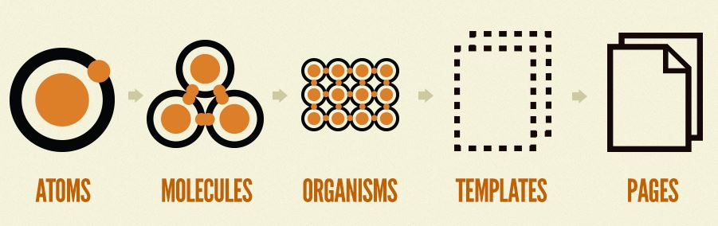
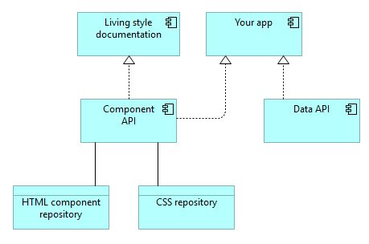

Whether you use a Javascript framework or not, reusing components can be a complex task. Managing a repository, keeping things up-to-date, not breaking backwards compatibility. A component API with living documentation makes it easier to manage.
Since it's a front-end API, the documentation should generate all types of possible components. This servers as your tests, as they update on each page refresh. If you modify a component, you can open its documentation and immediately see if you broke something.
Credit where it's due: The Lonely Planet's Rizzo. Their implementation of a maintainable style guide resonated with me and it couples well with the principles of Atomic Design. UI components are the building blocks for the larger components of templates. With good baseline CSS, like Tachyons, you get a maintainable and componentised style guide.
My own implementation uses Mustache as a templating engine, because it's infinitely portable. Since the API itself is just a set of logic-lesss Mustache templates and a single file, it has little complexity of itself. Add to that static docs that grabs uncached components and you're good to go. Developing in the docs itself is easy and is your documentation to boot.
These systems all tie together with the principles of atomic design.

Atoms. Atoms are the smallest building blocks. They are the HTML tags with its styling, the image, the button. Atoms can also be abstract small components like a color palette or an animation. They are small in size and purpose.
Molecules. Putting together several atoms gives you a more complex structure. They are small collections of atoms that can be reused and serve a single purpose.
Organisms. Molecules and atoms come together in more complex forms like organisms. It's a distinct section of a final interface.
Templates. Combining smaller components into a concrete template gives your the entire layout.
Pages. A page is a specific instance of a template.
Atoms, molecules all originate from the component API. Organisms generally live in the project itself, as they are bespoke implementations with these core components.
My component API is a personal implementation of this design pattern with a different flavour from atomic design creator's Patternlab, but you should definately check that out too.
So how does a component API reduce complexity? It's yet another system to manage, but one that fits into todays API-driven development. You get your data from an API, be it a headless CMS or a database wrapper or whatever you use. Why not take the same approach with your components?
Grab data from an API, apply your business logic and put that data in a component API call. The idea is really simple. The reduced complexity in the projects you work on make them easier to handle, and good documentation is easy to do.

The architecture image above shows a simple app that consumes the Component API. The documentation is a living document to reference and keep up-to-date. As for one example, I design components there and then add them to my app by consuming the API.
The components work by themselves, but it's their styling that gives them their appeal. By offering CSS from the same component API you can easily implement it in different projects. A visitor on multiple of your sites can rely on its cached version.
But CSS standardisation goes further. I've modified Tachyons, which has taken the idea of verbose CSS to another level. Building pre-defined rich components from Tachyons has the added benefit of using a well-tested system as backbone for global CSS.
Writing verbose css makes implementation of basic sites easier, while rich components move more complex elements to the API. That leaves you with application data and behaviour to manage.
Writing a lot of code over an over is never fun. With a Component API, you can realise reusability in a straight- forward manner. No more copying, refactoring and breaking things. Always have your most up-to-date front-end code readily available.
My experience has been positive so far, and I'm having fun building and extending the system.